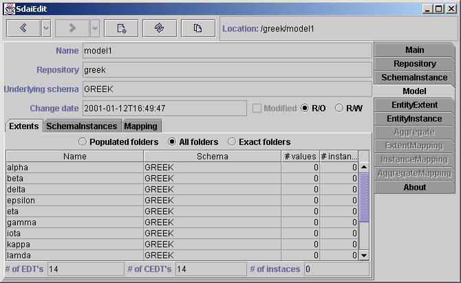
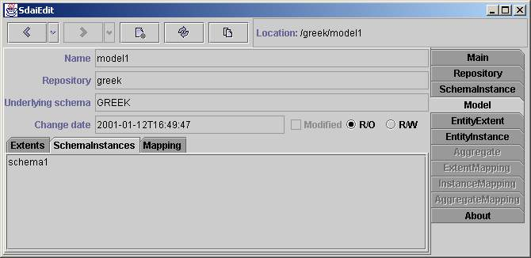
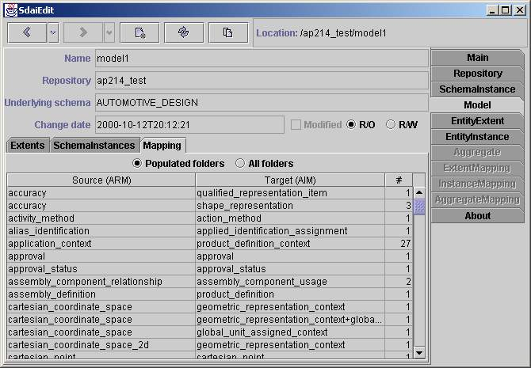

Model Page
This page shows the contents of a SDAI
model. The name of a model,
repository
to which it belongs to, underlying schema name, change date,
modified
flag and current access is given in the upper part of the page. The
modification date automatically
changes when you edit this model. The modified flag shows if the model
is being modified at the current
time. From the selection of two access radio buttons
r/o (read only) and r/w (read write) you can see current access to this
model. You can also change the access type by selecting one of them,
but remember that access
changes automatically when you try to edit data. There are three sub
tabs:
Extents, Schema Instances and Mapping. The Extents and Mapping tabs are
the
same as in
schema instance
page, but data is taken just only from this model.
Extents

The contents of all associated models
is shown in this window. There is
a filtering line at the top where you can filter the table below.
'Populated' will
show all the entities data types which have more than zero entity data
values (column '#values'). 'All folders' will show all entity data
types.
And 'Exact folders' filter just these entity data types which have any
instance
(column 'instances').
Table
Table have four columns: Name, Schema,
#values and #instances. Name column
contains names of entity data types (name of entity definition). The
schema
column contains schema name of an entity data type. #values column
shows
how many entity data values are there for this entity data type and the
#instances
show how many instances have this entity data type. If there is an
empty
cell instead of number in the '#values' column that means that such
entity data
type value can not exist (the entity data type is complex). If there is
an empty
cell instead of a number in '#instances' column that means that such
instance
can not exist (the entity data type is abstract).
The total number of entity data types,
complex entity data types
and instances is shown at the end .
Schema Instances

All the names of schema instances to
which this model belongs are listed in this page.
This is just informational page. It is not possible to add any model to
schemes
here. If you want to do so you need go to
schema instance page and add the model here.
Mapping

All AIM data in ARM context (All ARM
entity data types) are listed in the page above.
If there is no ARM schema for this underlying schema, than 'No mapping
data'
will appear instead of a table. There are two filtering radio buttons
at the top.
The first one 'Populated folders' will list the ARM entity data types
which
have any available AIM instance. The second one - 'All folders', lists
all available
ARM entity data types.
Table
The table consists of three columns:
'Source (ARM)', 'Target (AIM)' and '#'.
In the first column the names of ARM data types are presented. The
names of AIM
entity data type are presented in the second column. You must remember
that one ARM entity data type
can be mapped to several AIM entity data types. So there is a relation
many
to many.The third column shows number of instances, which are available
for the
pair of ARM and AIM entity data types.